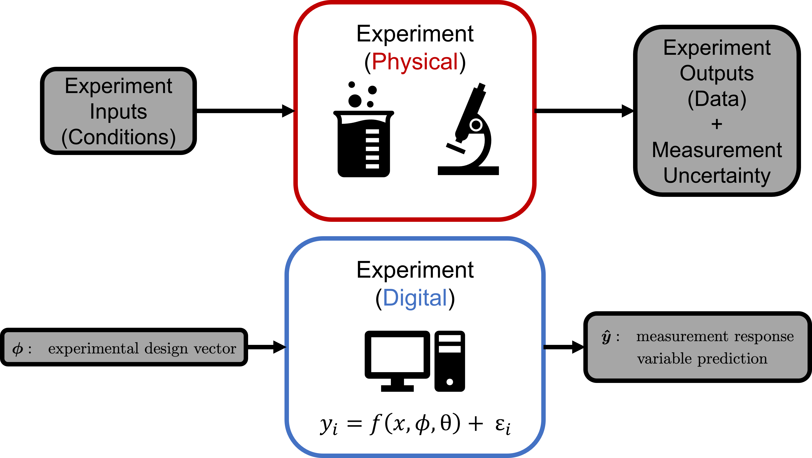
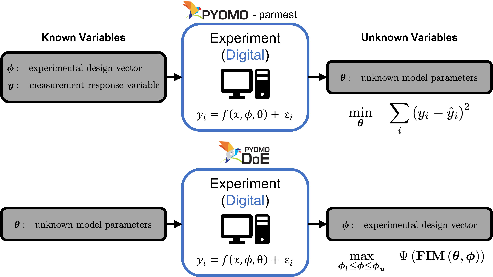
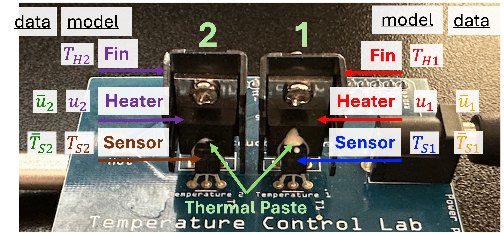

Experiment Abstraction#
The fundamental basis to parameter estimation and to optimal, science-based design of experiments (SBDoE) is an experiment. This concept is also borrows from the concept of a physical experiment:

The physical experiment takes experimental design values and produces data. The digital experiment takes in the experimental design values and produces prediction of those measured data from the physical system. The comparison of these two (measured data and predicted data) allow unknown model parameters to be estimated (during parameter estimation) and leveraged to find more information (during SBDoE):

As a reminder, the physical system is shown below:

# standard imports
import numpy as np
import pandas as pd
from dataclasses import dataclass
# Experiment object import
from pyomo.contrib.parmest.experiment import Experiment
# pyomo imports
from pyomo.environ import (
ConcreteModel,
Var,
Param,
Constraint,
TransformationFactory,
SolverFactory,
Objective,
minimize,
value as pyovalue,
Suffix,
Expression,
sin,
PositiveReals,
)
from pyomo.dae import DerivativeVar, ContinuousSet, Simulator
Data Helper Class#
This class helps us organize the data coming from the physical device. We also define a helper function to initialize our pyomo model.
@dataclass
class TC_Lab_data:
"""Class for storing data from a TCLab experiment."""
name: str # Name of the experiment (optional)
time: np.array # Time stamp for measurements, [seconds]
T1: np.array # Temperature of heater 1, [degC]
u1: np.array # Heater 1 power setting, [0-100]
P1: float # Power setting for heater 1, [W]
TS1_data: np.array # Setpoint data for temperature of sensor 1, [degC]
T2: np.array # Temperature of heater 2, [degC]
u2: np.array # Heater 2 power setting, [0-100]
P2: float # Power setting for heater 2, [W]
TS2_data: np.array # Setpoint data for temperature of sensor 1, [degC]
Tamb: float # Ambient temperature, [degC]
def to_data_frame(self):
"""Convert instance of this class to a pandas DataFrame."""
df = pd.DataFrame(
{
"time": self.time,
"T1": self.T1,
"u1": self.u1,
"P1": self.P1,
"TS1_data": self.TS1_data,
"T2": self.T2,
"u2": self.u2,
"P2": self.P2,
"TS2_data": self.TS2_data,
"Tamb": self.Tamb,
}
)
return df
def helper(my_array, time):
'''
Method that builds a dictionary to help initialization.
Arguments:
my_array: an array
Returns:
data: a dict {time: array_value}
'''
# ensure that the dimensions of array and time data match
assert len(my_array) == len(time), "Dimension mismatch."
data2 = {}
for k, t in enumerate(time):
if my_array[k] is not None:
data2[t] = my_array[k]
else:
# Replace None with 0
data2[t] = 0
return data2
The Experiment Object#
To automate many tasks pertaining to experiments, we simply need a digital model of the system in pyomo and carefully label the model with important sets of variables. Those sets are:
experiment_inputs- The experimental design decisions (control variables \(u_2\) in this case)experiment_outputs- The values measured during the experiment (temperature sensor data \(T_{S1}\) in this case)measurement_error- The error associated with individual values measured during the experimentunknown_parameters- Those parameters in the model that are estimated using the measured values during the experiment (heat transfer coefficients (\(U_a\) and \(U_b\)) and heat capacities (\(C^H_p\) and \(C^S_p\)) in this case)
Lastly, we need to make sure there is a function called get_labeled_model for an Experiment object. This will generate an instance of the digital model with the conditions we need to perform our analysis (parameter estimation or SBDoE)
class TC_Lab_experiment(Experiment):
def __init__(self, data, alpha=0.00016, theta_initial=None, sine_amplitude=None, sine_period=None, reparam=False):
"""
Arguments
---------
data: TC_Lab_Data object
alpha: float, Conversion factor for TCLab (fixed parameter)
theta_initial: dictionary, initial guesses for the unknown parameters
sine_amplitude: float, amplitude of the sine wave, default: None (do not use the sine wave)
sine_period: float, period of the sine wave, default: None (do not use the sine wave)
"""
self.data = data
if theta_initial is None:
self.theta_initial={
"Ua": 0.0535,
"Ub": 0.0148,
"inv_CpH": 1 / 6.911,
"inv_CpS": 1 / 0.318,
}
else:
self.theta_initial = theta_initial
self.alpha = alpha
# Make sure that the sine amplitude and period are reasonable
if sine_amplitude is not None and sine_period is not None:
self.sine_period_max = 10 # minutes
self.sine_period_min = 10 / 60 # minutes
assert sine_amplitude <= 50, "Sine amplitude must be less than 50."
assert sine_amplitude >= 0, "Sine amplitude must be greater than 0."
assert sine_period <= self.sine_period_max, "Sine period must be less than " + str(
self.sine_period_max
)
assert (
sine_period >= self.sine_period_min
), "Sine period must be greater than " + str(self.sine_period_min)
elif sine_amplitude is not None or sine_period is not None:
raise ValueError("If sine wave is used, both amplitude and period must be provided.")
else:
self.sine_period_max = None
self.sine_period_min = None
self.sine_amplitude = sine_amplitude
self.sine_period = sine_period
self.reparam = reparam
self.model = None
def get_labeled_model(self):
if self.model is None:
self.create_model()
self.finalize_model()
self.label_experiment()
return self.model
def create_model(self):
"""
Method to create an unlabled model of the TC Lab system.
"""
m = self.model = ConcreteModel()
#########################################
# Begin model constants definition
m.Tamb = Param(initialize=self.data.Tamb)
m.P1 = Param(initialize=self.data.P1)
m.alpha = Param(initialize=self.alpha)
m.P2 = Param(initialize=self.data.P2)
m.Tmax = 85 # Maximum temparture (Deg C)
# End model constants
#########################################
################################
# Defining state variables
m.t = ContinuousSet(initialize=self.data.time)
# Temperature states for the fins
m.Th1 = Var(m.t, bounds=[0, m.Tmax], initialize=m.Tamb.value)
m.Ts1 = Var(m.t, bounds=[0, m.Tmax], initialize=m.Tamb.value)
# Derivatives of the temperature state variables
m.Th1dot = DerivativeVar(m.Th1, wrt=m.t)
m.Ts1dot = DerivativeVar(m.Ts1, wrt=m.t)
# End state variable definition
################################
####################################
# Defining experimental inputs
# Add control variables (experimental design decisions)
m.U1 = Var(m.t, bounds=(0, 100), initialize=helper(self.data.u1, self.data.time))
m.U1.fix() # Fixed for parameter estimation
# End experimental input definition
####################################
####################################
# Defining unknown model parameters
# (estimated during parameter estimation)
# Heat transfer coefficients
m.Ua = Var(initialize=self.theta_initial["Ua"], bounds=(0, 1e4))
m.Ua.fix()
m.Ub = Var(initialize=self.theta_initial["Ub"], bounds=(0, 1e4))
m.Ub.fix()
# Inverse of the heat capacity coefficients (1/CpH and 1/CpS)
m.inv_CpH = Var(initialize=self.theta_initial["inv_CpH"], bounds=(0, 1e6))
m.inv_CpH.fix()
m.inv_CpS = Var(initialize=self.theta_initial["inv_CpS"], bounds=(0, 1e3))
m.inv_CpS.fix()
# End unknown parameter definition
####################################
################################
# Defining model equations
# First fin energy balance
@m.Constraint(m.t)
def Th1_ode(m, t):
return m.Th1dot[t] == (m.Ua * (m.Tamb - m.Th1[t]) + m.Ub * (m.Ts1[t] - m.Th1[t]) + m.alpha * m.P1 * m.U1[t]) * m.inv_CpH
# First sensor energy balance
@m.Constraint(m.t)
def Ts1_ode(m, t):
return m.Ts1dot[t] == (m.Ub * (m.Th1[t] - m.Ts1[t])) * m.inv_CpS
# End model equation definition
################################
return m
def finalize_model(self):
"""
Finalizing the TC Lab model. Here, we will set the
experimental conditions and discretize the dae model.
"""
m = self.model
####################################
# Set initial conditions
if self.data.time[0] == 0:
if self.data.TS1_data is not None and self.data.TS1_data[0] is not None:
# Initialize with first temperature measurement
m.Th1[0].fix(self.data.TS1_data[0])
m.Ts1[0].fix(self.data.TS1_data[0])
else:
# Initialize with ambient temperature
m.Th1[0].fix(m.Tamb)
m.Ts1[0].fix(m.Tamb)
# End initial conditions definition
####################################
########################################
# Defining optional sine wave equations
# (only when sine wave control is used)
if self.sine_amplitude is not None and self.sine_period is not None:
# Add measurement control decision variables
m.u1_period = Var(
initialize=self.sine_period, bounds=(self.sine_period_min, self.sine_period_max)
) # minutes
m.u1_amplitude = Var(initialize=self.sine_amplitude, bounds=(0, 50)) # % power
# Fixed for parameter estimation
m.u1_period.fix()
m.u1_amplitude.fix()
# Add constraint to calculate u1
@m.Constraint(m.t)
def u1_constraint(m, t):
return m.U1[t] == 50 + m.u1_amplitude * sin(2 * np.pi / (m.u1_period * 60) * t)
m.U1.unfix() # Unfixed for above constraints
# End optional sine wave constraints
########################################
#########################################
# Initialize the model using integration
m.var_input = Suffix(direction=Suffix.LOCAL)
if self.data.u1 is not None:
# initialize with data
m.var_input[m.U1] = helper(self.data.u1, self.data.time)
else:
# otherwise initialize control decision of 0
m.var_input[m.U1] = {0: 0}
# Simulate to initialize
# Makes the solver more efficient
if self.sine_amplitude is None or self.sine_period is None:
sim = Simulator(m, package='scipy')
tsim, profiles = sim.simulate(
numpoints=100, integrator='vode', varying_inputs=m.var_input
)
sim.initialize_model()
else:
sim = Simulator(m, package='casadi')
tsim, profiles = sim.simulate(
numpoints=100, integrator='idas', varying_inputs=m.var_input
)
sim.initialize_model()
pass
TransformationFactory('dae.finite_difference').apply_to(
m, scheme='BACKWARD', nfe=len(self.data.time) - 1
)
# End dynamic model initialization
#########################################
def label_experiment(self):
"""
Annotating (labeling) the model with experimental
data, associated measurement error, experimental
design decisions, and unknown model parameters.
"""
m = self.model
#################################
# Labeling experiment outputs
# (experiment measurements)
m.experiment_outputs = Suffix(direction=Suffix.LOCAL)
# Add sensor 1 temperature (m.Ts1) to experiment outputs
m.experiment_outputs.update((m.Ts1[t], self.data.T1[ind]) for ind, t in enumerate(self.data.time))
# End experiment outputs
#################################
#################################
# Labeling unknown parameters
m.unknown_parameters = Suffix(direction=Suffix.LOCAL)
# Add labels to all unknown parameters with nominal value as the value
m.unknown_parameters.update((k, k.value) for k in [m.Ua, m.Ub, m.inv_CpH, m.inv_CpS])
# End unknown parameters
#################################
#################################
# Labeling experiment inputs
# (experiment design decisions)
m.experiment_inputs = Suffix(direction=Suffix.LOCAL)
# Add experimental input label for control variable (m.U1)
if self.sine_amplitude is not None and self.sine_period is not None:
m.experiment_inputs[m.u1_period] = None
m.experiment_inputs[m.u1_amplitude] = None
else:
m.experiment_inputs.update((m.U1[t], None) for t in self.data.time)
# End experiment inputs
#################################
#################################
# Labeling measurement error
# (for experiment outputs)
m.measurement_error = Suffix(direction=Suffix.LOCAL)
# Add sensor 1 temperature (m.Ts1) measurement error (assuming constant error of 0.25 deg C)
m.measurement_error.update((m.Ts1[t], 0.25) for t in self.data.time)
# End measurement error
#################################
Remaining Notebooks#
For the remaining notebooks, we will import that above experiment class from a python file that contains a few helper functions.